压力大
“今天太累了，吃点好的吧。”
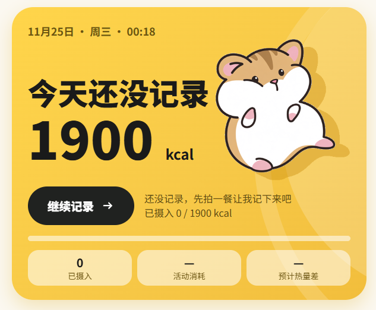
MOGU 回应
先看情绪，再谈选择
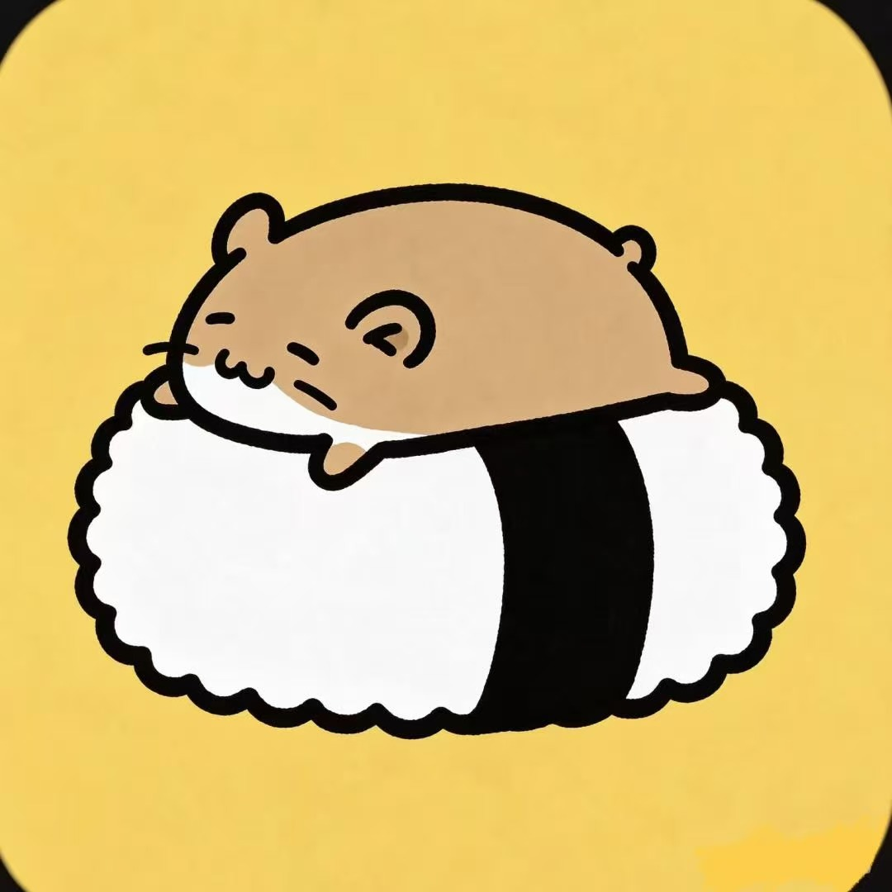
MOGU CASE STUDY 打开 MOGU App ↗不制造焦虑的饮食记录 App
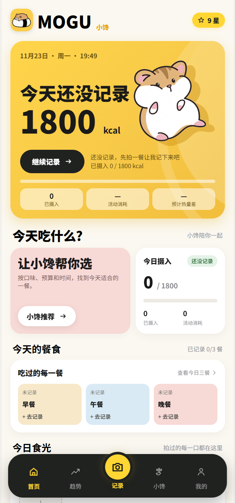
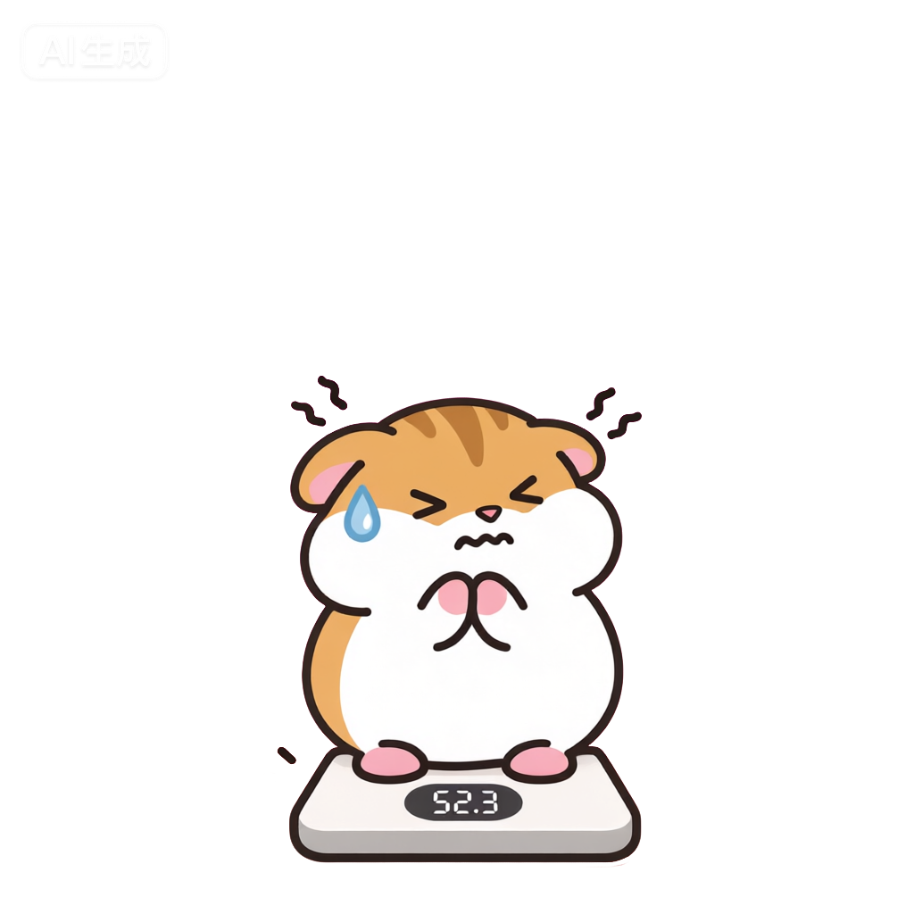
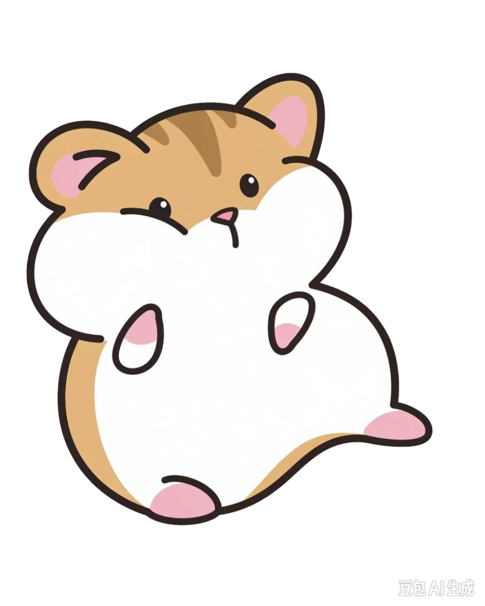
6 份访谈 · 5 人可用性测试 · 一款把「没做到」也接住的饮食记录 App
01 / THE MOMENT
“其实我不饿，只是嘴巴想吃而已。”
“完了，今天又失败了。”
“算了，下周再重新开始吧。”
EMOTION CURVE / 情绪起伏
洞察：用户不需要说教，需要接住她们情绪的小帮手。
先看用户遇到了什么02 / FINAL PRODUCT
MOGU 把选餐、记录、理解与角色回应，连成一条可以重复的日常路径。
用户不需要理解全部功能，只要在每个关键一刻，知道下一步可以做什么。
03 / LOOK BACK AT THE DATA
THE REALITY / 真实的减肥困境
来源：团队前期问卷（n=112）与 6 份深度访谈综合；百分比按有效问卷统计。
所以真正要问的是：他们为什么放弃？
不是因为缺乏意志力，而是现有的工具太反人性。
04 / WHY THEY QUIT
五个原因，串成一条从冲动到放弃的链；每一个都应该有清楚的产品回应。
压力大

先看情绪，再谈选择
刷吃播
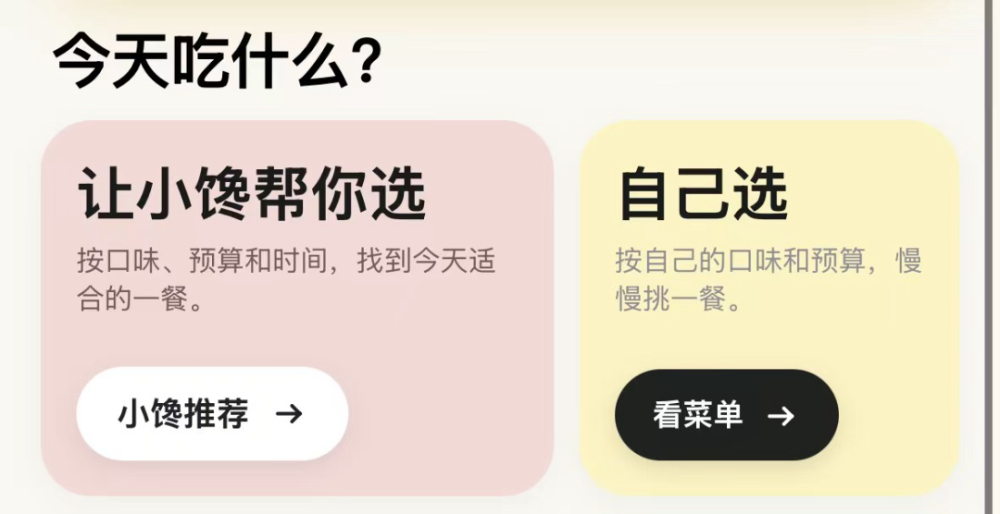
把眼前选择摆出来
想吃好吃的
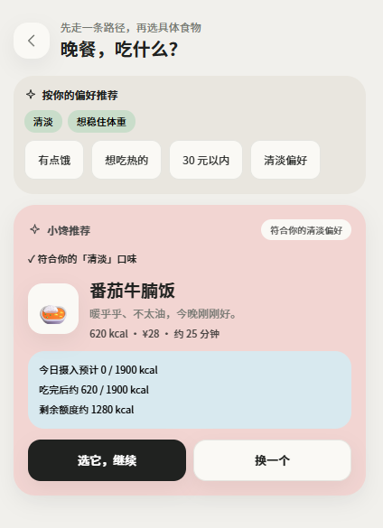
口味与剩余一起给
记录麻烦
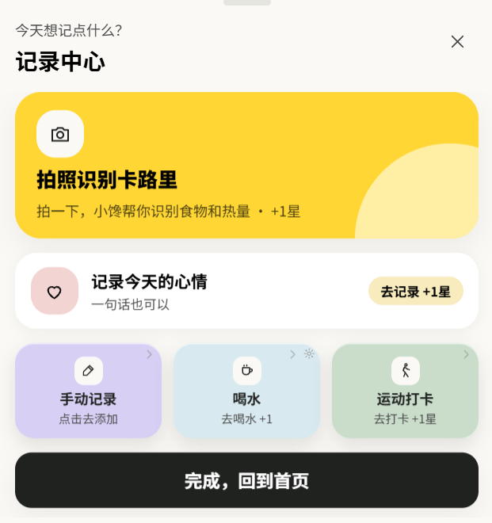
先记后改，不求精准
又要重新开始
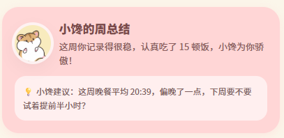
把下一次留好
05 / USER JOURNEY
真正击垮计划的，不是一次吃多，而是她把一次偏航，解读成"整个计划已经失败"。
情绪曲线
◉ 上升◉ 回落
“其实不饿，就是嘴巴想吃。”
“低卡的不想吃，想吃的又不敢点。”
“就这一次，今天应该没事吧。”
“已经吃很多了，干脆吃够。”
“今天又失败了，记了更难受。”
“算了，下周再认真开始。”
核心洞察 真正让人放弃的，不是吃多了一次，而是“今天已经失败，索性下周再来”的循环。
05 / PROBLEM DEFINITION
如何帮助有健康饮食需求的用户，更轻松地了解自己的饮食状况，
做出适合自己的饮食选择，并长期保持良好的饮食习惯？
问题不再是冰冷的卡路里计算，而是关于如何让改变自然发生。
06 / BRAINSTORM
先发散：如何帮助有健康饮食需求的用户，更轻松地了解自己的饮食状况，做出适合自己的饮食选择，并长期保持良好的饮食习惯？
今日剩余热量大数字
A早餐、午餐、晚餐时间轴
B拍照识别食物与热量
C份量、单位一键修改
A热量进度条与参考范围
B一句话记录今天心情
C一周热量趋势柱状图
A每周一句饮食规律总结
B按剩余热量给三个餐食选项
A口味优先或低卡优先切换
B按预算、时间筛选用餐
C保留一小份想吃的食物
A高蛋白、低脂替换建议
B附近和外卖场景推荐
C一次只给一个明确选择
A吃完这餐后推荐下一餐
B小馋根据状态给出表情回应
C记录一餐获得星星
A星星抽盲盒、换装
B漏记或中断后不清零
C一键轻量重启
A吃多后做一次轻复盘
B桌面小组件持续提醒
C周趋势加下周一个小目标
C07 / BEFORE & AFTER
V1 早期：功能大杂烩
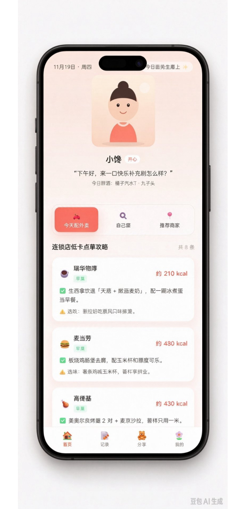
V2 探索：尝试分类
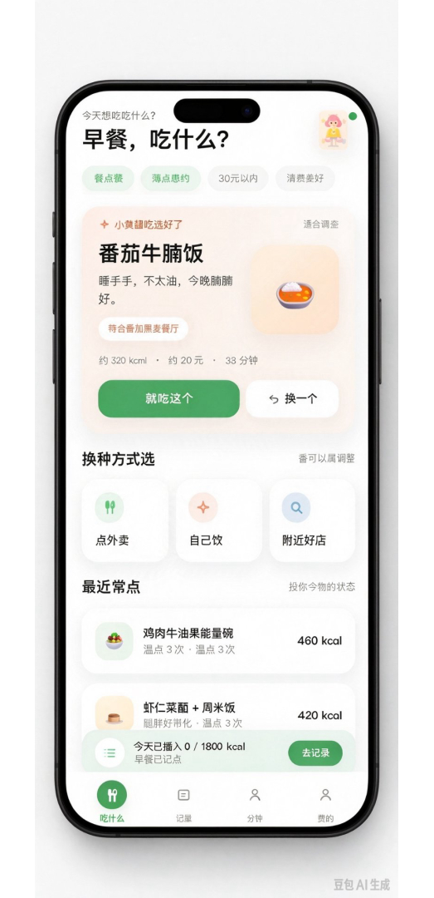
V3 转折：引入情绪
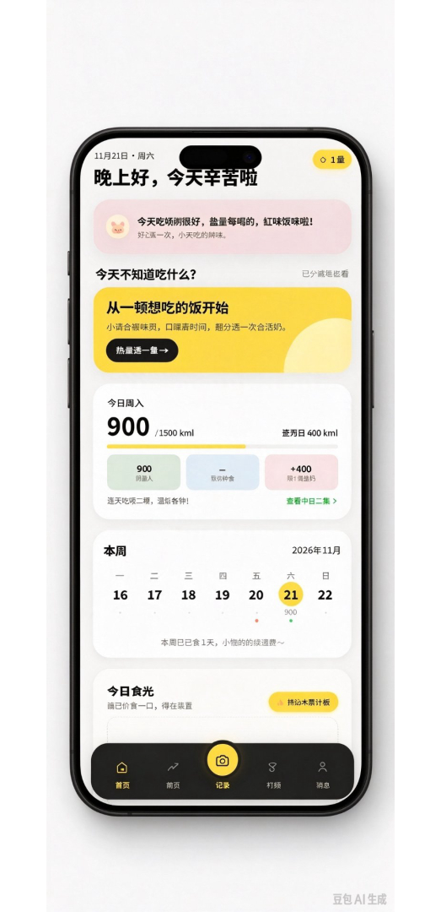
V4 现在：聚焦卡路里核心
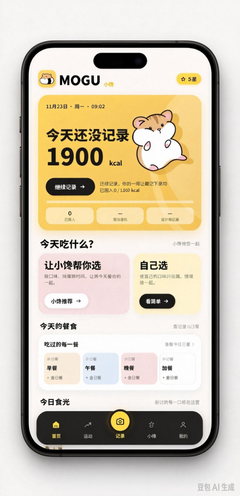
不断试错与做减法，只为把最核心的体验还给用户。
08 / WOW FEATURE 01
用户抱怨：“为什么所有人都是 1500 kcal？根本吃不饱。”
删除固定数值，改用身高体重动态计算。
用范围代替绝对数字，减少标准焦虑。
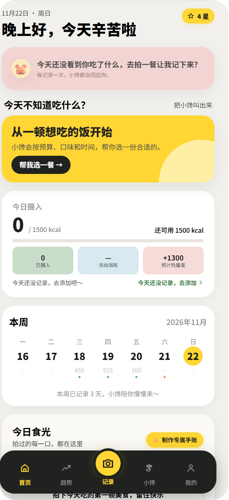
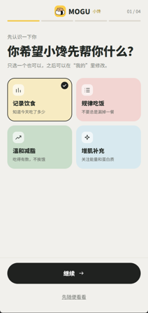
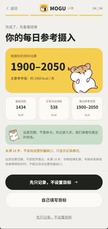
09 / WOW FEATURE 02
想先看看还剩多少，再决定吃什么。
今日摄入入口上移，核心功能重新排列。
一打开就知道还剩多少，无需自己找。
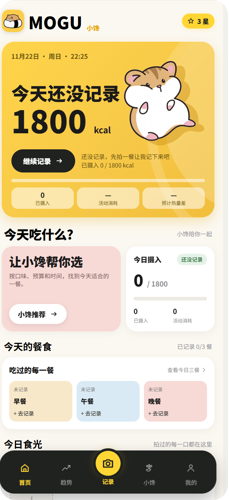
10 / WOW FEATURE 03
我想自己挑，但入口不够明显。
把“推荐”和“自己选”并列，再按场景分流。
降低决策成本，保留自主权。
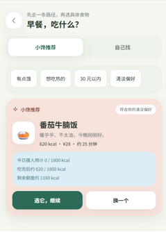
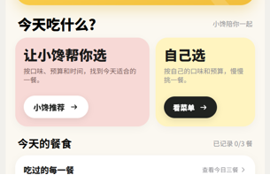
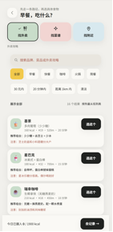
11 / WOW FEATURE 04
有朋友一起会更有趣，也可以互相鼓励。
在“小馋”页加入好友入口，看穿搭打卡。
用陪伴和展示替代体重比较。
12 / VISUAL SYSTEM · INTERFACE
首页、记录、趋势、小馋和我的，五个每天会反复进入的界面，共用一套颜色、圆角与反馈方式。
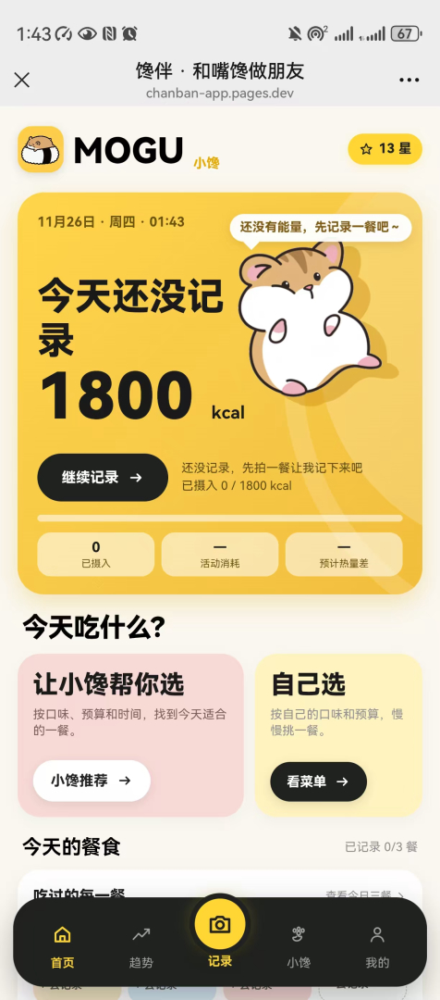
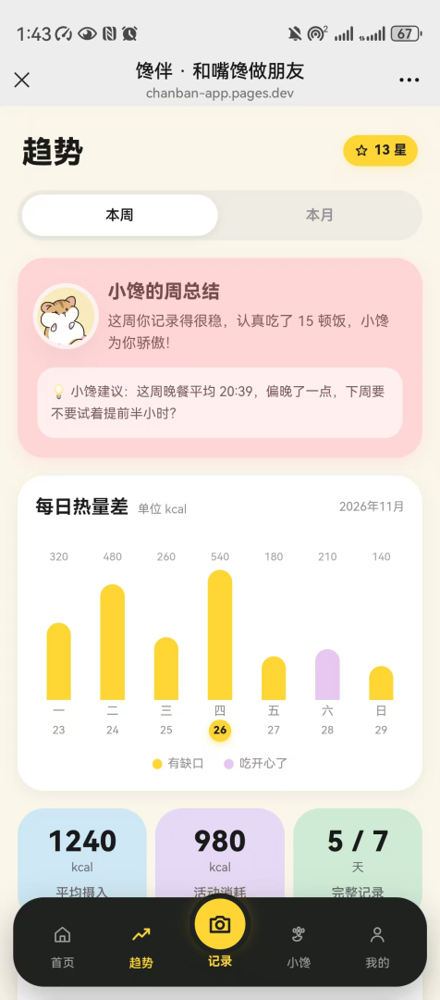
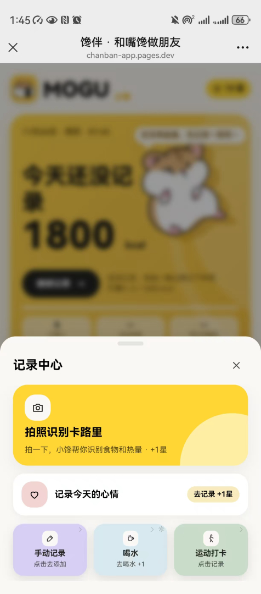
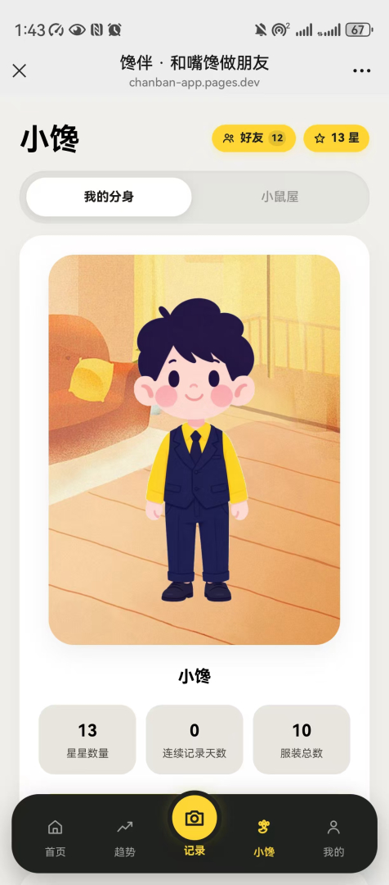
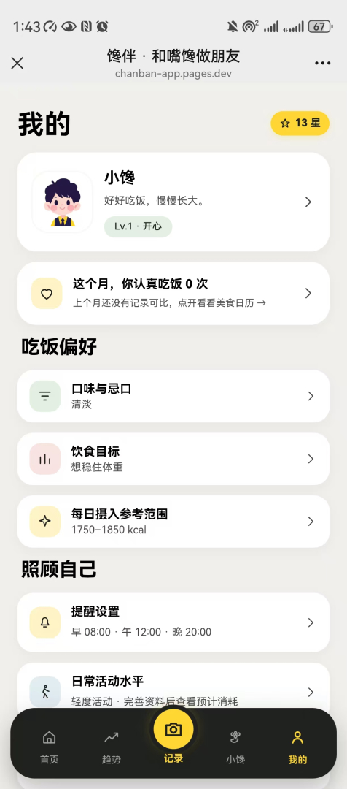
13 / VISUAL SYSTEM · CHARACTER
小馋既是一个治愈的 IP 图标，也是用户可以长期养成的虚拟分身。
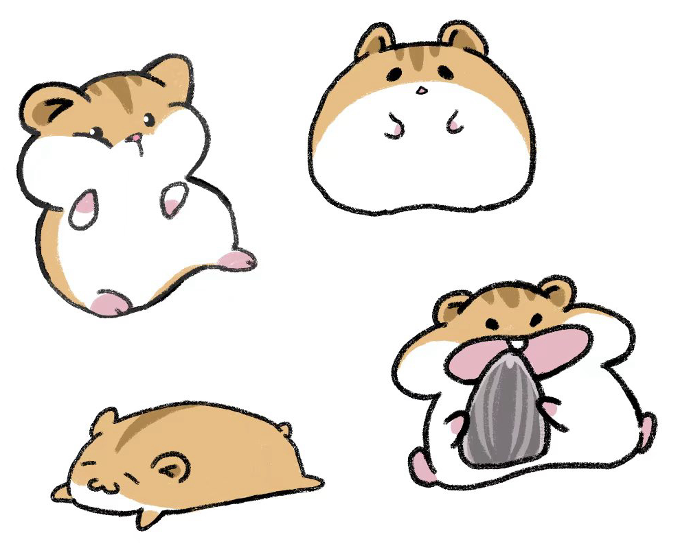
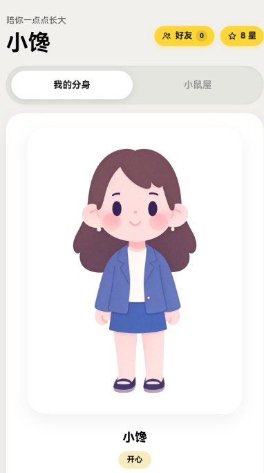
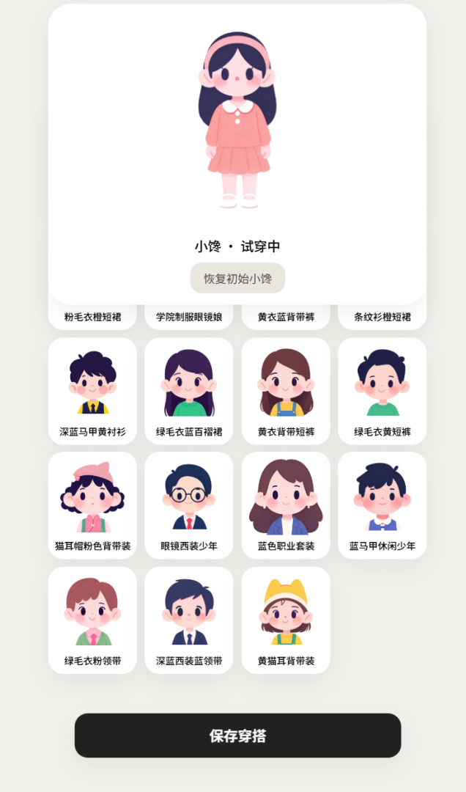
15 / USABILITY TEST
5 位参与者 · 4 个任务场景 · 主持人先不提示入口，记录完成率与卡点，用户来自前期访谈被试。
测试目的：验证用户能否在无提示下，顺畅完成“记录今天”、“深夜点外卖”等核心任务。
核心发现 01 / 正向验证
3/5位用户独立完成记录
“我拍了，但不知道它算得对不对？”
用户原声 · 需要明确结果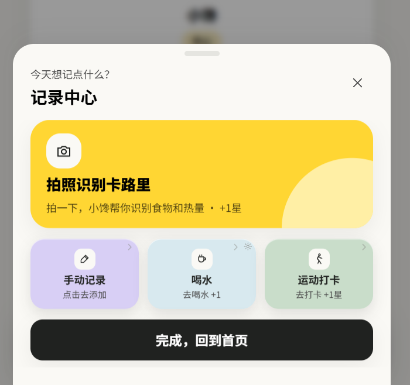
拍照核心发现 02 / 痛点放大
1/5位用户完成该任务
“看到 1900 我就不想记了。”
用户原声 · 需要情绪承接16 / REFLECTION
MOGU 馋伴 · 让每一次没做到，都还有下一次。
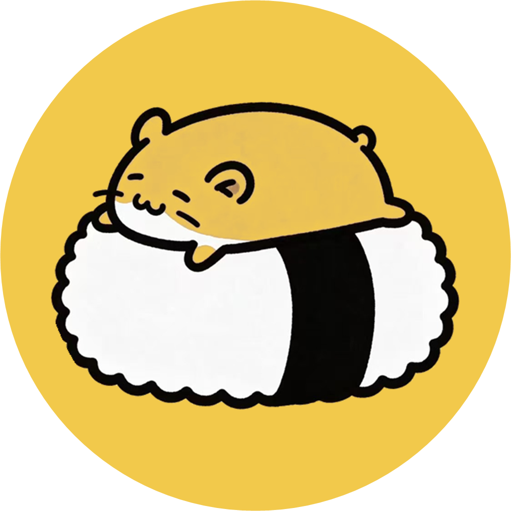